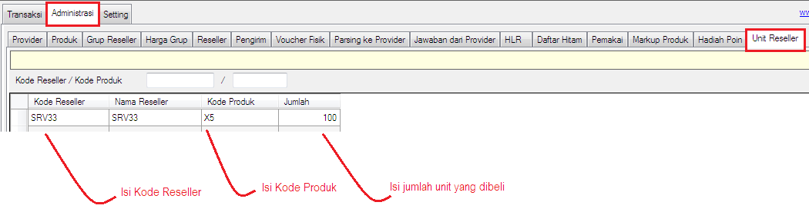

Sistem Unit
Sistem penjualan di server pulsa mula - mula menggunakan sistem saldo, dimana 1 saldo dapat digunakan untuk berbagai macam transaksi, mulai isi ulang pulsa reguler, isi paket data internet, isi paket SMS, bayar tagihan PLN, beli token PLN dan lain sebagainya. Sistem tersebut akan cocok diterapkan di server manakala Resellernya adalah konter, akan sedikit kerepotan dalam mengatur stok dikala Resellernya adalah sesama server pulsa terutama stok produk yang belinya dari provider menggunakan sistem unit.
Berangkat dari situ terciptalah fitur bernama Sistem Unit di OtomaX v4.0.0, dimana dengannya server dapat menjual produk berdasarkan hitungan unit, misal produk X5 = 100 unit. Ini artinya Reseller dapat melakukan transaksi produk X5 sebanyak 100 kali transaksi sukses. Setelah itu habis, dia tidak dapat transaksi dan jika ingin dapat bertransaksi kembali dia harus melakukan pembelian unit produk X5 lagi. Begitu pula untuk produk yang lain.
Apabila ingin menjual produk dengan Sistem Unit berikut panduan ringkasnya:
- Pastikan edisi OtomaX Anda ialah edisi Ultimate, sebab hanya tersedia di edisi itu klik disini. Jika bukan, lakukan upgrade OtomaX sekarang juga dengan klik disini dan atau membeli OtomaX Ultimate klik disini.
-
Masuk ke Administrasi -> Unit Reseller -> lakukan sesuai petunjuk di gambar bawah ini dan kemudian klik tombol Simpan.

Lakukan hal sama untuk Kode Produk dan Reseller yang lain.
- Selesai
Dengan demikian, mulai v4.0.0 dapat diterapkan berjualan dengan Sistem Saldo sekaligus Sistem Unit di OtomaX jika menggunakan OtomaX edisi Ultimate. Dan akhirnya problem alokasi stok terselesaikan.